V1
Thrown lead
The plug is thrown in from off-screen right and rides its own cable track, so the lead lays itself down behind it: along the bottom, round the bend, and up into place. The five contour echoes fly the same route a beat apart, trail as a ghosted motion echo, then catch up and nest. A damped 3° wobble seats it; the sound rings ripple on landing.
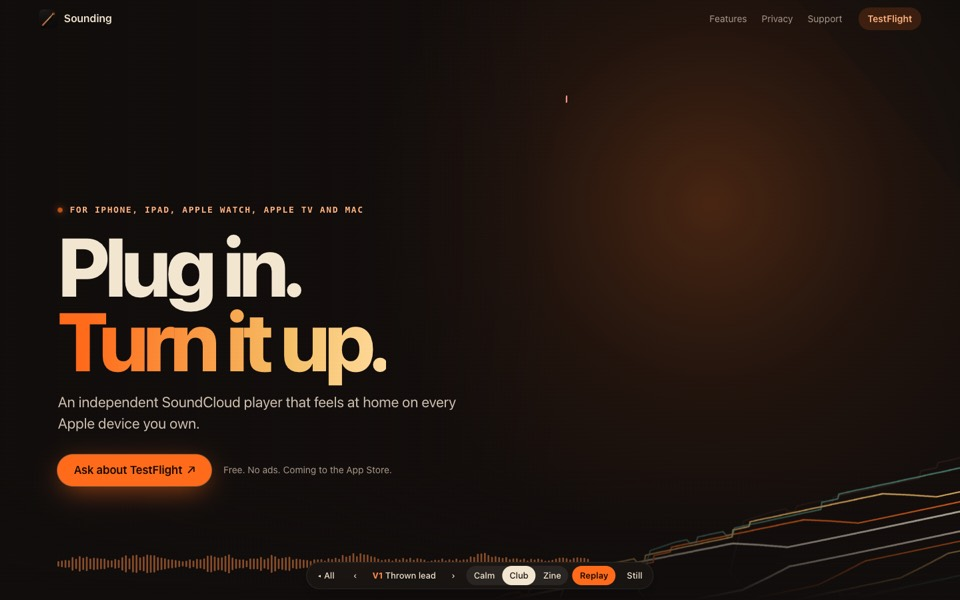
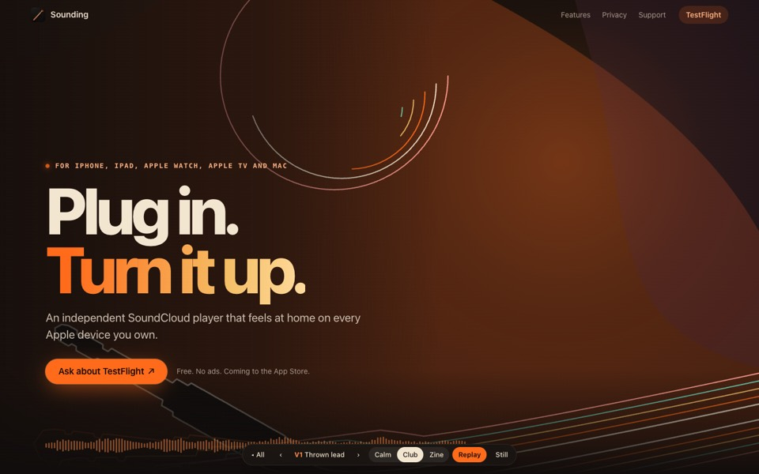
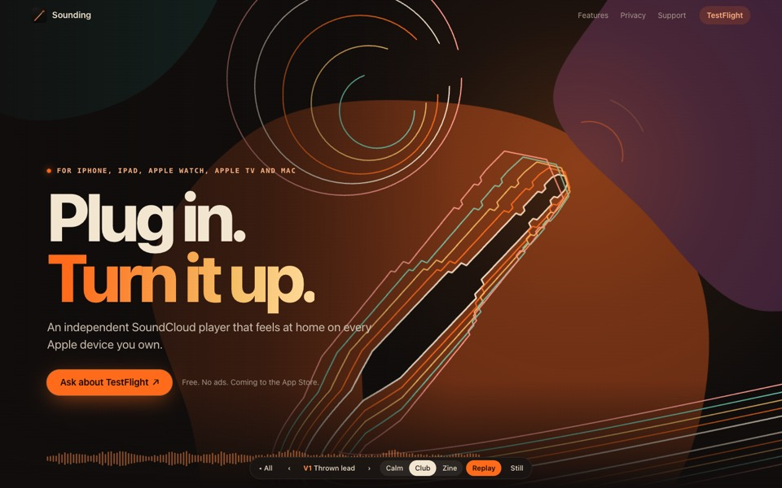
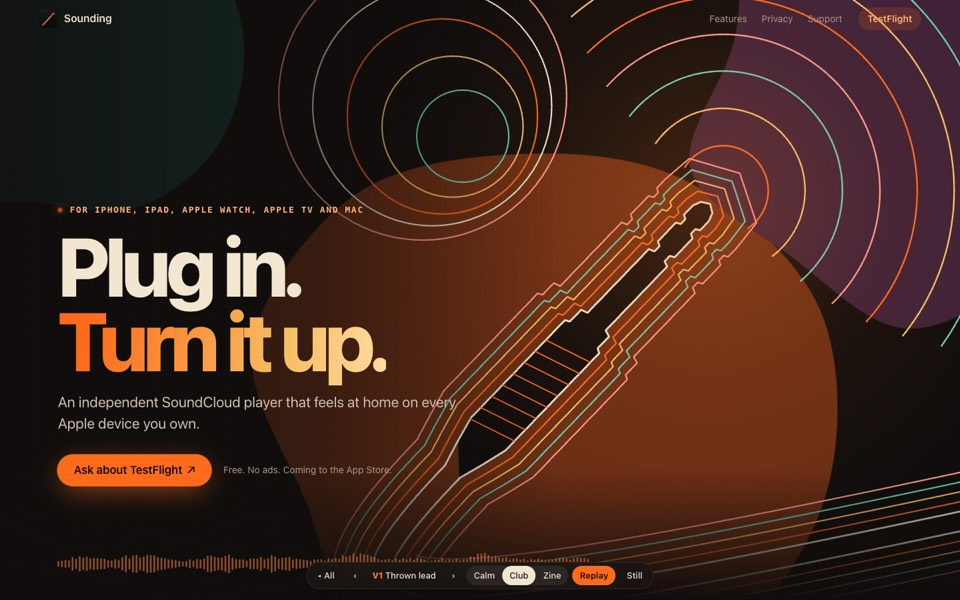
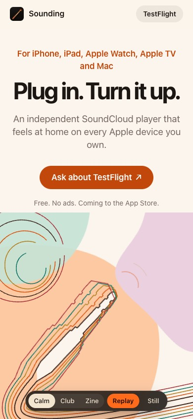
Motion timeline
| Colour masses | 0–1.5 s | App’s own flood-in: sweep, 52° twist, scale 3.2→1; cubic in-out; 160 ms stagger |
|---|---|---|
| Cone circles | 0.2–1.8 s | stroke draw, 90 ms stagger |
| Lead plug flight | 0–1.45 s | ease-out (power 2.7) along the cable track; rotation follows the tangent |
| Echo contours | +60 ms each | 22 ms shorter each, so they close the gap and land 0.05 s apart |
| Seat | 1.45–2.15 s | damped rotation spring: 3°, 2.6 Hz, e^−7.5t |
| Sound rings | ≈1.0 s | scale .86→1 + draw from centre, 55 ms stagger, 700 ms out-quart |
| Idle | from 2.6 s | signal pulse runs down the cable every 4.8 s; masses breathe (8.5–12 s) |
Performance
Every moving part is transform (the plug outlines, fill and knurl ride translate+rotate keyframes sampled at 60 Hz, played by the Web Animations API on the compositor) or stroke-dashoffset (the cable). No path re-tessellation, no layout. 10 small SVG layers are promoted only while they move; styles are committed and layers dropped when each animation ends.
Reduce Motion
Static composed frame: masses, cone, rings and the full jack exactly as the app’s settled art. No idle pulse.
Scores
- Wow
- Brand fit
- Performance
- Mobile
- Accessibility
- Build effort
V2
Patch in
Recommended
The app’s own draw-on, told as a sentence. Five contours draw themselves from the cable end up to the tip while the jack waits a few millimetres short of a copper socket. It slides home, there is a small click (socket pulse, a signal-coloured spark, a 4 px overshoot), and the sound rings ripple out. It is the top-shelf photo, drawn.
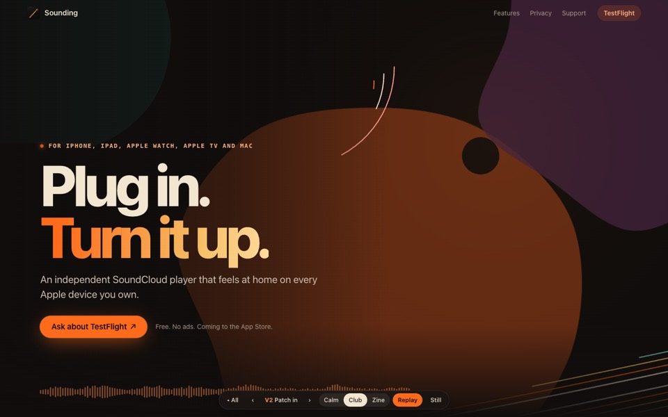
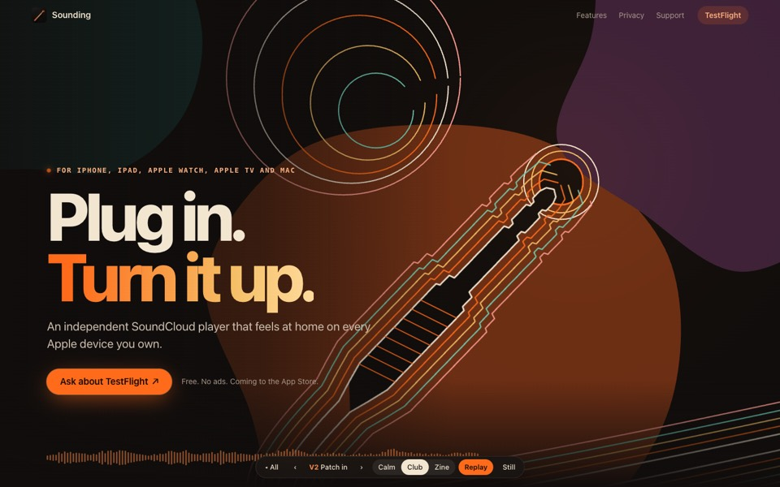
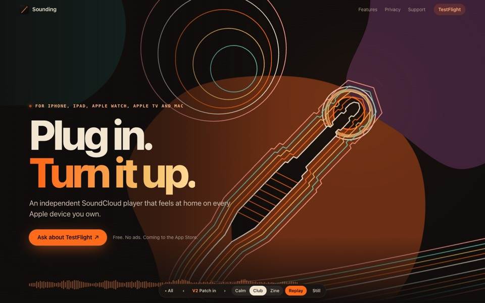
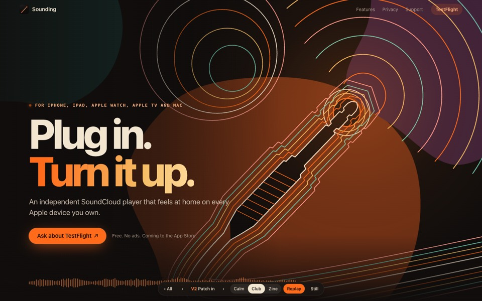
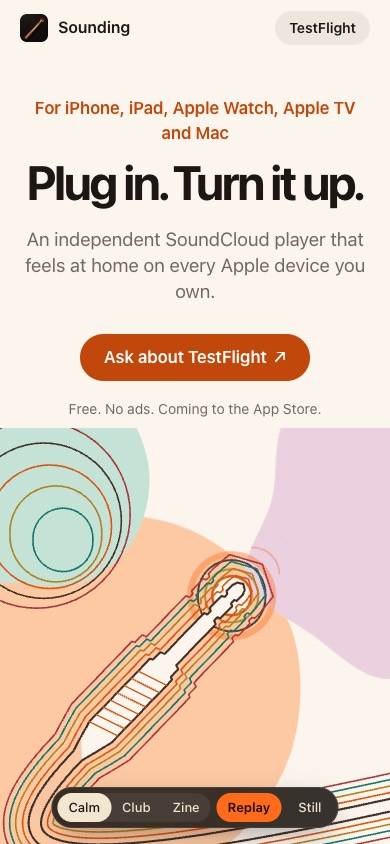
Motion timeline
| Colour masses | 0–1.6 s | opacity + scale .94→1, out-expo, 140 ms stagger |
|---|---|---|
| Contours draw | 0–1.86 s | 1.5 s each from the cable end, 90 ms stagger, ease (.45,.05,.2,1) |
| Socket rings | 0.7–1.6 s | stroke draw |
| Knurl + plug fill | 1.0–1.65 s | draw / fade |
| Slide home | 2.0–2.3 s | ease-in (.55,0,.9,.55): it accelerates into the socket |
| Click | 2.3–2.72 s | 4 px overshoot and settle; socket scale 1.16 pulse (520 ms); spark ring 0.6→2.6 and fade (620 ms); masses swell 3.5% |
| Sound rings | 2.33 s | 60 ms stagger, 760 ms out-quart |
| Idle | from 3.2 s | signal pulse + breathing masses |
Performance
stroke-dashoffset for the draw, transform for the slide, click and ripple, opacity for everything else. Nothing is sampled per frame in JS; all of it is declarative Web Animations, so the main thread is idle during the intro. Cheapest of the six.
Reduce Motion
Static composed frame with the plug already seated in the socket.
Scores
- Wow
- Brand fit
- Performance
- Mobile
- Accessibility
- Build effort
V3
Unspool
A small coil of five-strand cable lands in the hero and starts to spin. It pays out both ways: one end streaks off to the edge of the frame, the other end, the jack, rides up the cable’s path and straightens into the silhouette. The colour masses bloom out of the coil as it unwinds, and the coil spins down to nothing.
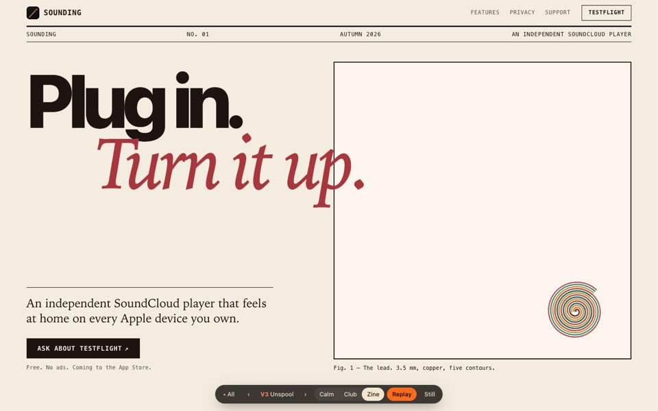
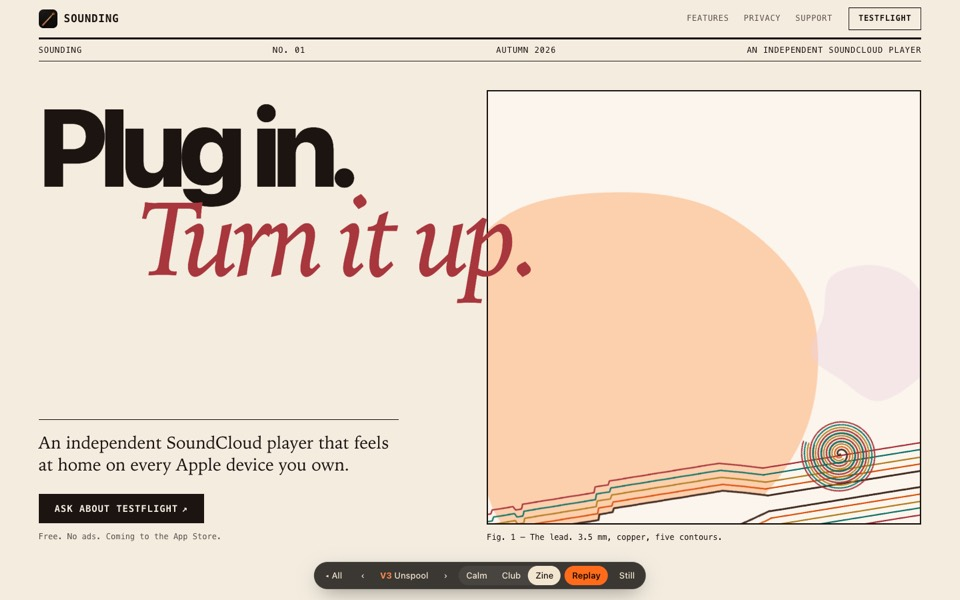
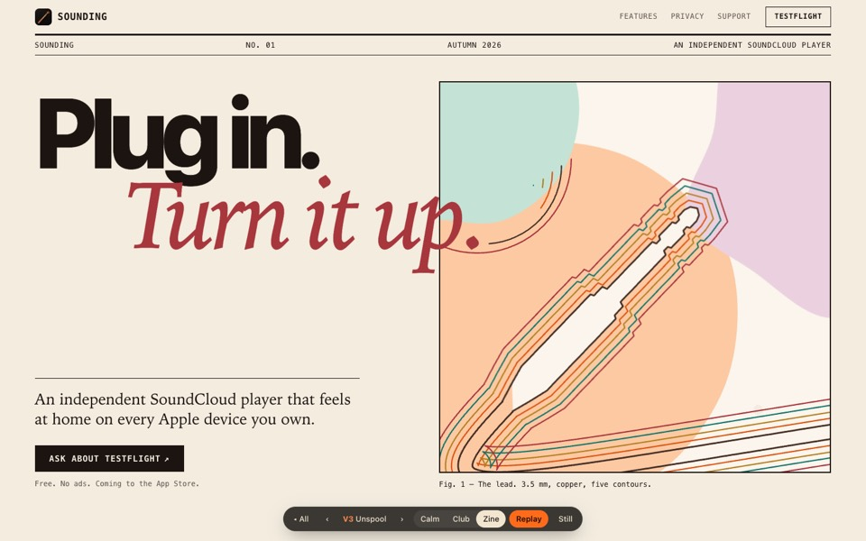
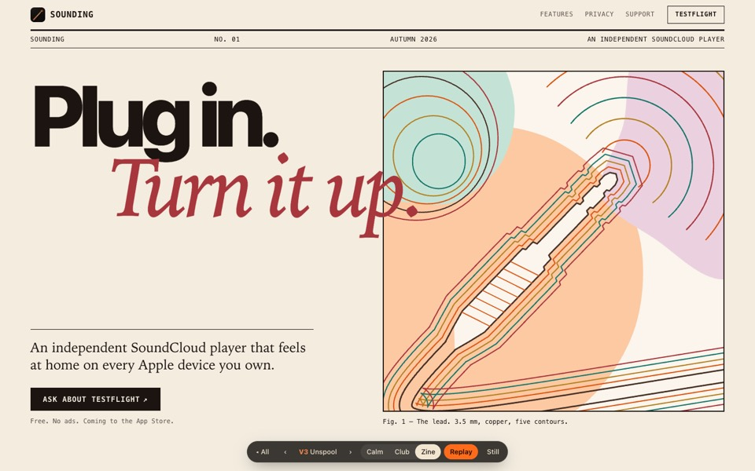
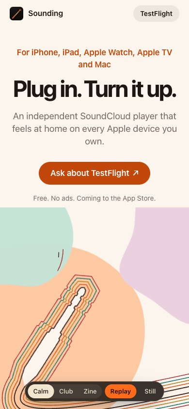
Motion timeline
| Coil lands | 0–0.5 s | scale .15→1.06→1, −200° → 0°, out-expo |
|---|---|---|
| Coil unwinds | 0.5–1.77 s | −900° spin, scale →.08, fade; cubic in-out |
| Jack rides up | 0.42–1.77 s | cubic in-out along the cable track, then 650 ms seat wobble |
| Far cable | 0.42–1.42 s | draws out to the edge, out-expo, 25 ms stagger per strand |
| Masses bloom | 0.57 s +170 ms each | from the coil’s position, spring ζ .62 / 0.9 s |
| Rings | 1.65 s | ripple, 55 ms stagger |
| Idle | from 2.9 s | signal pulse + breathing masses |
Performance
Same budget as Thrown lead: transform keyframes for the jack, stroke-dashoffset for the cable (split at the coil into four sub-paths per contour), transform/opacity for the coil and masses. Slightly more SVG nodes (20 cable sub-paths).
Reduce Motion
Static composed frame. The coil is never drawn.
Scores
- Wow
- Brand fit
- Performance
- Mobile
- Accessibility
- Build effort
V4
The long lead
Scroll is the hand. At the top, the jack floats loose with a tangle of cable behind it, drifting. As you scroll, the tangle draws back into the plug, the real cable grows in from the edge, and the jack settles; it seats as the features arrive, and the rings ripple. Below the hero, the lead carries on down the page, snaking between sections, and plugs into the TestFlight button at the bottom.
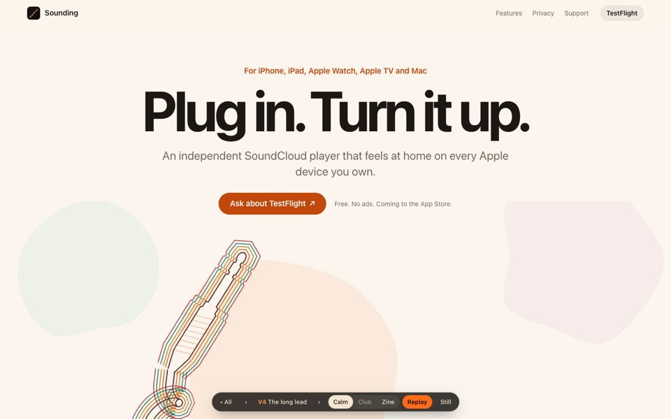
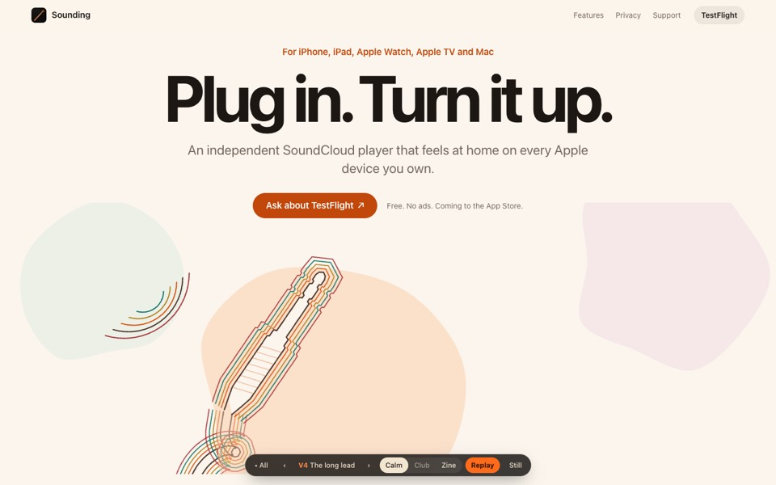
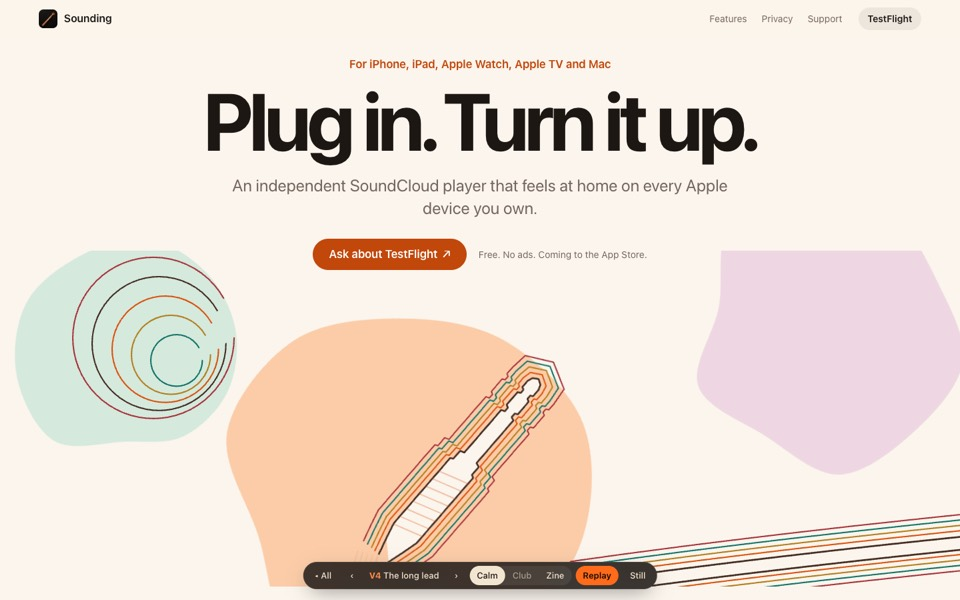
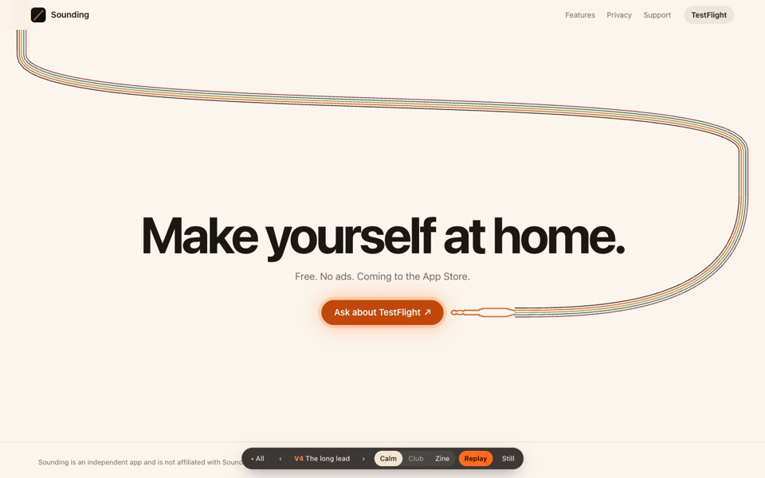
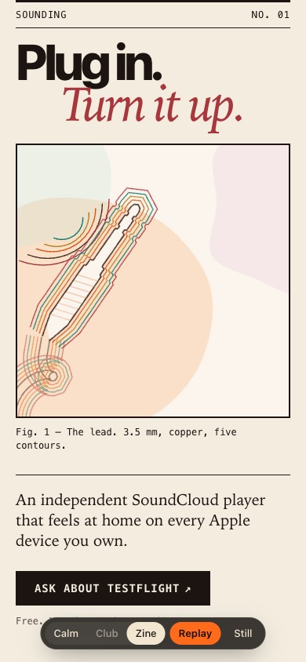
Motion timeline
| Hero track | 100 vh of scroll | sticky hero; progress p = 0→1 |
|---|---|---|
| Settle | p 0–0.72 | smoothstep; loose drift (14 px / 4°) fades out with p |
| Tangle retracts | p 0–0.67 | stroke-dashoffset |
| Cable grows | p 0.10–0.76 | stroke-dashoffset from the frame edge |
| Seat | p 0.72–0.82 | slides the last 8% of plug length |
| Plug-in | p ≥ 0.80 | one-shot ripple, 650 ms; reverses (rings fade, 260 ms) if you scroll back |
| The lead | rest of page | drawn end tracks 72% of the viewport; plug + CTA glow fade in at the end, 400 ms |
Performance
Passive scroll listener, one rAF per scroll frame, writes only transform, opacity and stroke-dashoffset. The drift loop runs only while the plug is loose and the hero is on screen. The lead is one page-height SVG of five strands with a precomputed y→length table, so no getPointAtLength at scroll time. Highest cost of the six on low-end phones because the page-length SVG repaints as it draws.
Reduce Motion
Plugged-in hero and a fully drawn lead with its end plug in place. Nothing is tied to scroll.
Scores
- Wow
- Brand fit
- Performance
- Mobile
- Accessibility
- Build effort
V5
Loose lead
The lead is yours to swing. A verlet rope follows the pointer with real slack and weight, and the jack points the way the cable pulls. Click, tap or press “Plug in”, and it eases home into the composed hero; the rings ripple and the masses brighten. On touch, or when the pointer rests, it sways idly on its own.
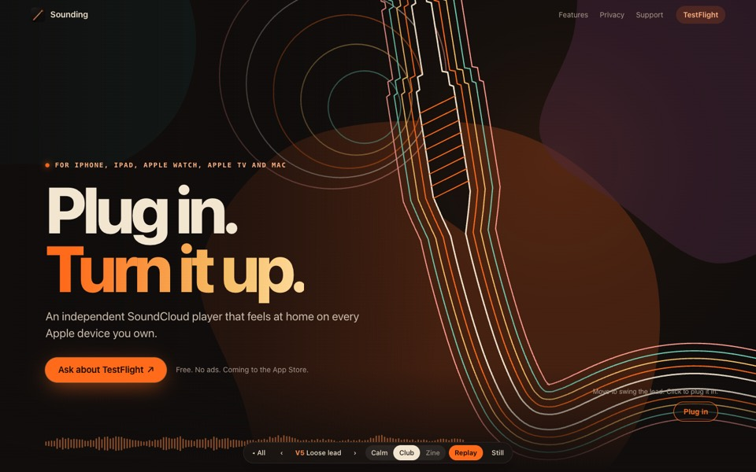
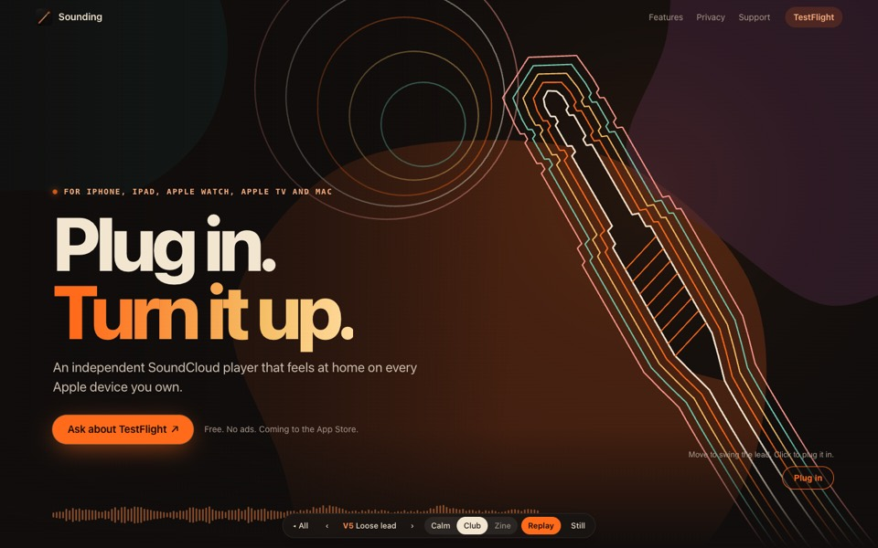
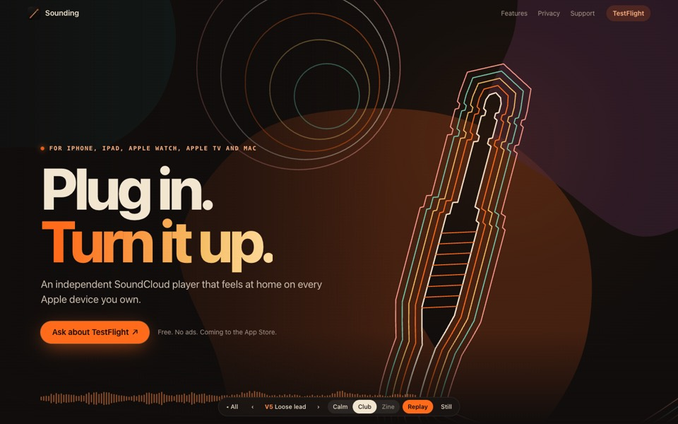
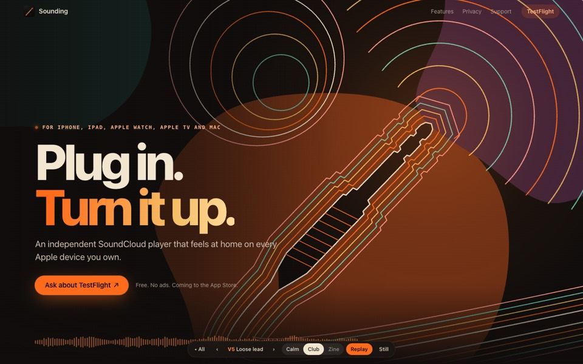
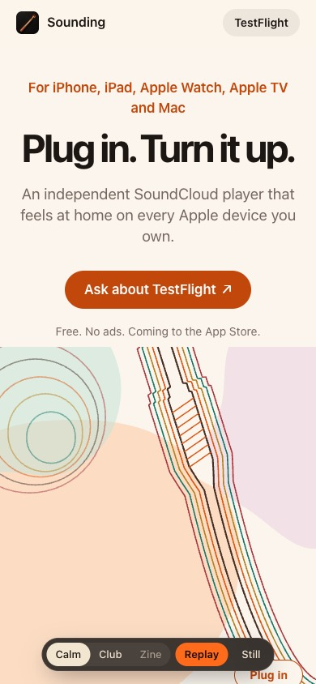
Motion timeline
| Loose | until click | 30-point verlet rope, 24 constraint passes, gravity 2200 px/s², head spring 9 s⁻¹; idle Lissajous sway after 1.6 s without pointer |
|---|---|---|
| Plug in | 0–0.95 s | rope points and angle tween to the rest pose, cubic in-out |
| Swap | 0.95 s | canvas hides; the identical SVG hero takes over |
| Rings + masses | 0.95–1.85 s | ripple 700 ms; masses .55→1 opacity, 900 ms |
| Idle | +0.9 s | signal pulse + breathing masses |
Performance
The rope is drawn to a 2D canvas each frame (5 contours × ~120 points). This is the one version that redraws geometry every frame, by necessity, not transform-only. It stays well inside budget (see the trace), stops as soon as the plug is home, and pauses offscreen.
Reduce Motion
Static composed frame, already plugged in. No rope, no button, no hint.
Scores
- Wow
- Brand fit
- Performance
- Mobile
- Accessibility
- Build effort
V6
Press
A new idea: the art is a screen print, so print it. Every layer (masses, cone, rings, each contour echo) starts as a separate plate in an exploded 3D stack. The stack rotates flat and the plates descend, slightly out of register, then a press lands: everything snaps into registration with a tiny squash. Afterwards, a fine pointer tilts the print and the plates part a few pixels for depth.
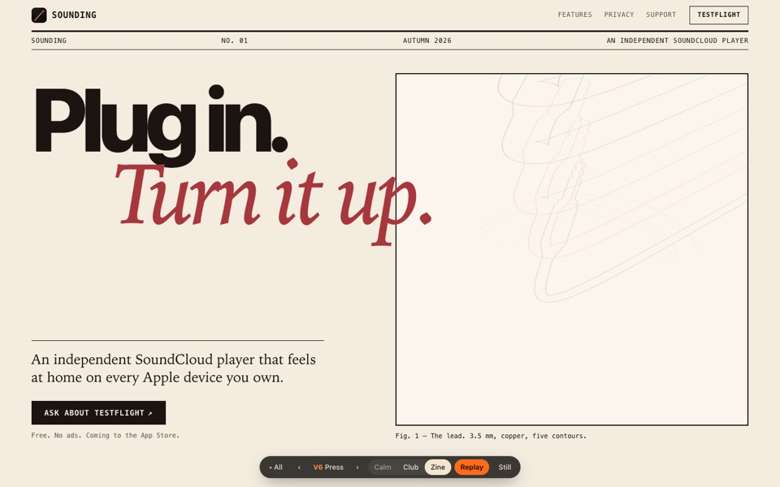
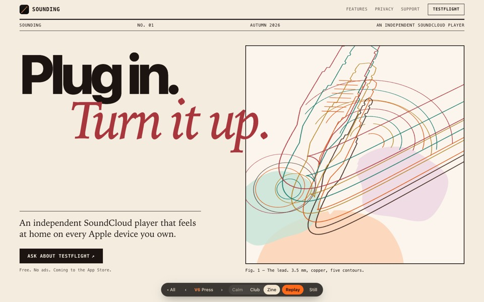
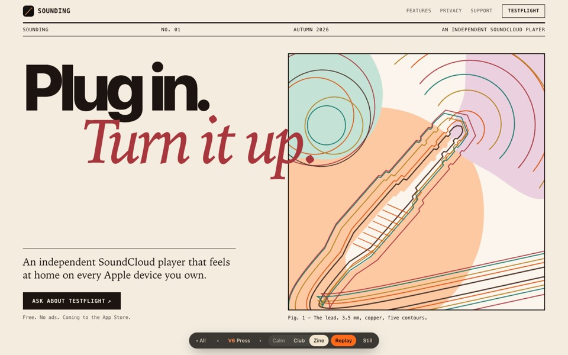
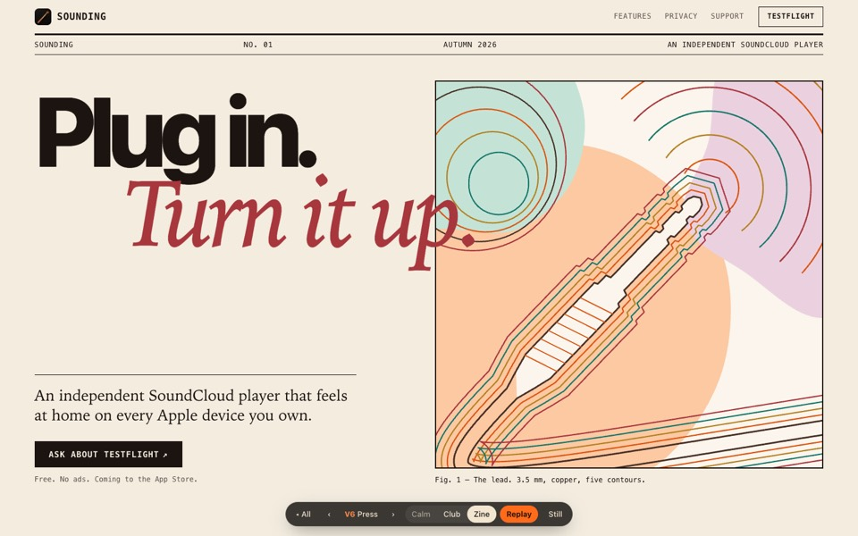
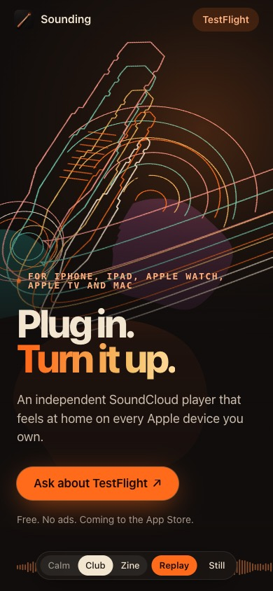
Motion timeline
| Plates appear | 0–0.2 s | opacity, bottom plate first |
|---|---|---|
| Stack flattens | 0–1.75 s | rotateX 56° / rotateZ −34° / scale .72 → flat; cubic in-out |
| Plates descend | ≈0.05–1.7 s | translateZ (up to 480 px) → 0, keeping misregistration (±3% of the art size), 18 ms stagger |
| Press | 1.7–1.86 s | registration snaps; stack squashes 1.5% over 420 ms; rings nudge 3% |
| Tilt | after 2.3 s | pointer → ±5–6° tilt, plates part by 9% of their depth (fine pointers only) |
Performance
Pure 3D transforms and opacity, all on the compositor. The cost is memory: about 22 layers are promoted at once during the 1.7 s stack, so it is the heaviest on GPU memory (fine on any recent device). Static after the press, unless you tilt.
Reduce Motion
Flat, registered print. No stack, no tilt.
Scores
- Wow
- Brand fit
- Performance
- Mobile
- Accessibility
- Build effort